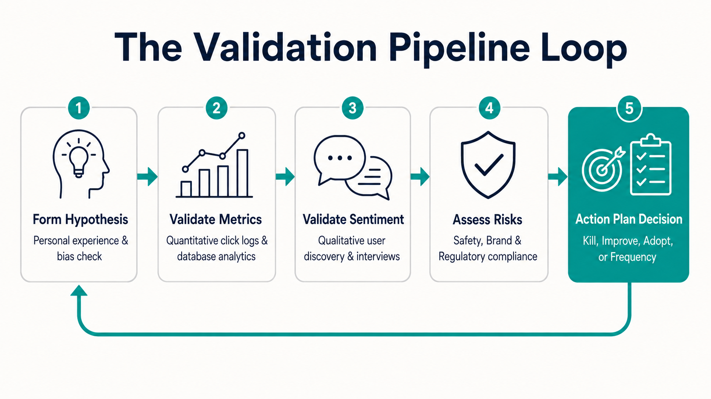
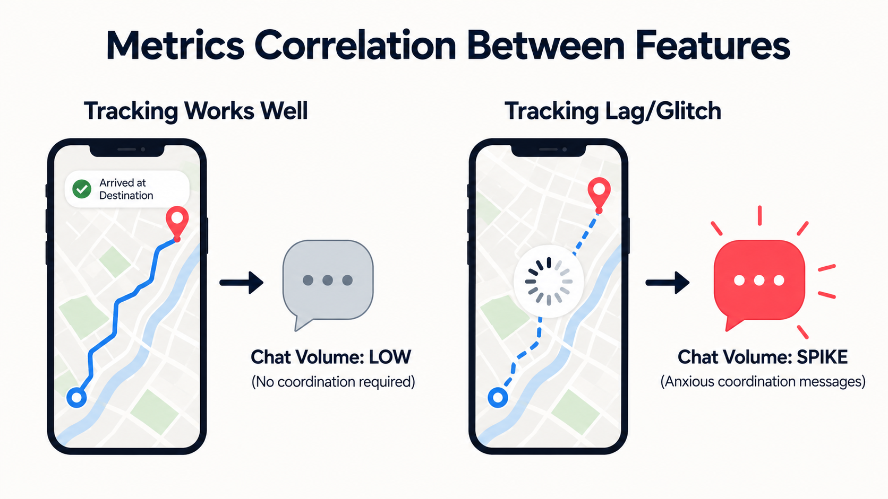
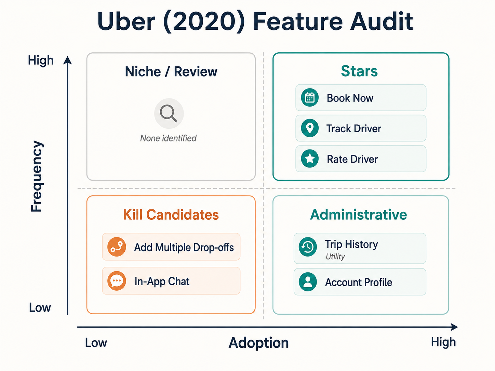
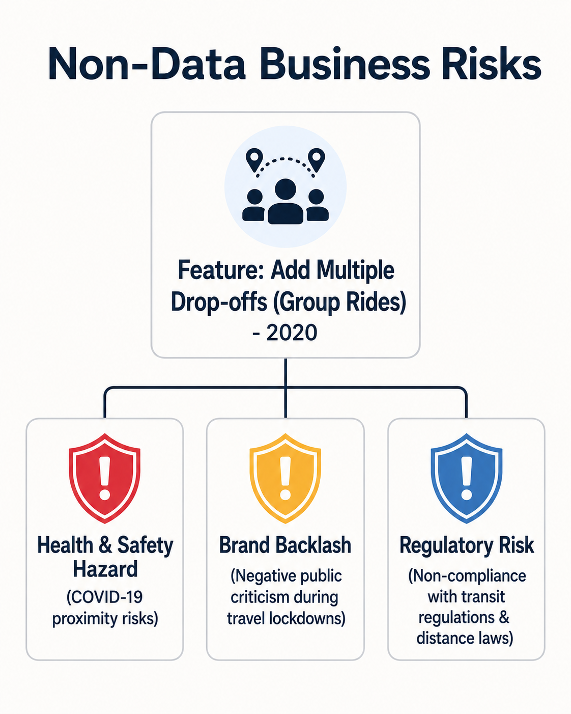
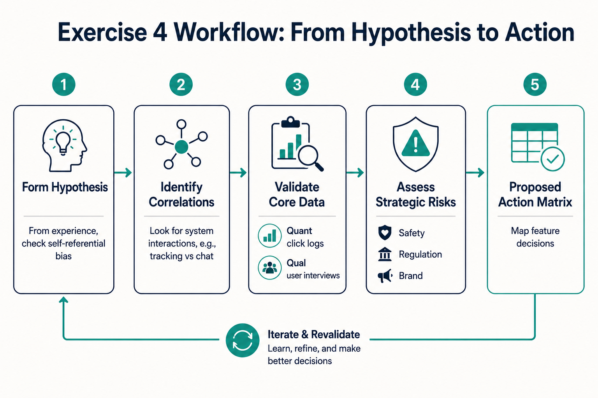

Your goal
Formulate a feature-usage hypothesis when direct analytics are unavailable, identify metrics correlations between features, and evaluate non-data risks (branding, regulatory, health) when deciding whether to kill or improve features.
Lecture overview
This lecture introduces the fourth practical exercise of the course: performing a feature audit on your chosen study product. It covers how to structure feature hypotheses, check for metrics correlations, and evaluate external business risks.
Central argument
In professional product environments, feature audits are driven by quantitative product analytics. When accessing internal company data is impossible, product managers must start by forming structured usage hypotheses based on personal experience. However, a PM is rarely a typical user; these hypotheses must be validated through hard numbers and user interviews. Furthermore, the decision to sunset or improve a feature must incorporate broader business risks—such as safety hazards, branding backlash, and government regulations—rather than relying solely on metrics.
1. Auditing Without Internal Analytics
When direct analytics access is unavailable (e.g., studying a competitor or during early validation), you can follow a hypothesis-driven audit workflow: form a usage hypothesis based on personal experience, acknowledge your self-referential bias, and plan quantitative (hard numbers) and qualitative (interviews) validation pathways.

21-validation-loop.png
Horizontal pipeline diagram showing the progression from forming a hypothesis based on personal experience, to validating it via quantitative click tracking and qualitative user interviews.
2. Metrics Correlations Between Intersecting Features
Features do not exist in isolation. A metrics correlation is a relationship where the performance or behavior of one feature directly drives the metrics of another. In the Uber Rider App, map tracking reliability directly correlates with chat usage: when GPS tracking is accurate, support chat volume drops; when tracking lag occurs, chat volume spikes.

21-metrics-correlation.png
Side-by-side flow diagrams contrasting System A (smooth driver tracking coordinates location silently, leading to low chat volume) with System B (map lag causes passenger anxiety, prompting an in-app chat volume spike).
3. Case Study: Uber Rider App (2020) Feature Audit
This case study analyzes passenger-facing features on the Uber Rider app in 2020. The audit maps outliers—such as the high-usage Book Now button and real-time tracking, vs the low-usage Multiple Drop-offs and Promo widgets—on the Feature Audit Matrix.

21-uber-2020-audit.png
A 2x2 Feature Audit Matrix mapping Uber (2020) Rider app capabilities. Plotted items: Book Now and Track Driver (Stars), Trip History and Account Settings (Administrative), and Add Multiple Drop-offs (Kill Candidate).
4. Evaluating Sunsetting Candidates Beyond the Data
Deciding to kill a feature involves analyzing business factors beyond pure usage numbers. For group rides (Add Multiple Drop-offs) in 2020, safety hazards (COVID-19 proximity), brand backlash, and government lockdowns were primary non-data risks that dictated restricting the feature.

21-non-data-risks.png
A central card labeled group rides branching into three warning shield vectors: COVID-19 Health & Safety Hazard, Brand Damage & Lockdowns backlash, and Regulatory Compliance risks.
Comparison: Phased Action Matrix
| Feature | Audit Hypothesis | Proposed Choice | Strategic Justification |
|---|---|---|---|
| Add Multiple Drop-offs | Low adoption, high health hazard. | Kill / Restrict | High COVID-19 safety risk, brand backlash, and government lockdown regulations. |
| Track Driver | High adoption, high utility. | Improve | Invest in GPS tracking accuracy to reduce in-app chat support overhead. |
| Book for Later | Low adoption, low awareness. | Increase Adoption | Shift customer perception of Uber from on-demand only to scheduled transit. |
| Rate Driver | Mid-adoption, emotionally biased. | Increase Frequency | Prompt ratings for average, middle-of-the-road experiences to gather unbiased driver data. |
Practical Product Management example
Situation
A PM at an ed-tech video streaming platform is reviewing a feature called "Group Study Room" (which lets users watch lectures together and chat). Internal database records show that only 1.8% of active users utilize the feature. However, the engineering team spends 20% of their maintenance sprint fixing websocket connection drops and audio lag bugs related to the study room code.
Decision
The PM drafts a feature audit. They form a hypothesis that users prefer individual study with simple discussion boards. They validate this hypothesis by looking at telemetry data (showing high discussion board usage) and running 10 user interviews. The interviews reveal that users find the group video study rooms awkward. Furthermore, the PM identifies a regulatory risk: hosting open, unmoderated student video chats creates compliance risks under child safety laws (COPPA). The PM decides to kill the Group Study Room feature.
Reasoning
The feature has low adoption and low frequency. Retaining it represents a double threat: high engineering maintenance costs (technical debt) and a severe child safety compliance risk. The value does not justify the risk.
Consequence
The PM removes the feature. The developer team immediately reallocates 20% of their time to optimizing the core video player load speed (which is a Star feature used by 95% of users daily). Student safety risks are eliminated, and page-load performance increases by 25%.
Transferable lesson
Sunsetting decisions must evaluate engineering maintenance costs (technical debt) and external risks (compliance, safety, brand) alongside usage metrics. A low-adoption feature that carries high risk is a prime candidate to be killed.
Common misunderstandings
"A PM's personal usage pattern is representative of the target market"
Correction: This is the Self-Referential Design Bias. Product managers are power users who understand the product inside out. Your usage is almost never representative of the average user. Always validate your personal experience hypotheses with quantitative user logs and qualitative testing.
"If a feature has low adoption, we must immediately kill it"
Correction: Not all low-adoption features should be killed. The feature might be a niche feature (low adoption, high frequency) that is highly valuable to your most profitable customers, or it could be an essential utility (like the Emergency Button on Uber) that must remain for safety and compliance.
"Features operate independently of one another"
Correction: Features exist within an ecosystem. A change in one feature can cause a ripple effect in another's metrics. For example, improving Uber's map tracking automatically decreases in-app chat volume because the user's need to ask "where are you?" is resolved.
Key concepts and definitions
- Hypothesis-Driven Audit: The process of evaluating feature usage by forming an initial hypothesis based on experience, and then validating it with data.
- Metrics Correlation: A statistical relationship between two features where changes in the usage of one correspond to changes in the other.
- Self-Referential Bias: The cognitive bias where a product creator mistakenly assumes that their preferences and behaviors match those of the average user.
- Non-Data Risks: External factors (such as government regulations, branding backlash, and safety hazards) that influence product decisions.
Key takeaways
- Hypotheses are starting points, not facts; personal experience must be validated with quantitative logs and user interviews.
- Metrics correlations reveal how features interact (e.g., laggy map tracking directly spikes in-app chat support tickets).
- Ratings features naturally capture emotional extremes (very happy or very unhappy users), leaving average experiences undocumented.
- Sunsetting decisions must evaluate non-data risks (safety, branding, regulatory) that metrics tables cannot capture.
- Add Multiple Drop-offs was restricted by Uber in 2020 due to COVID-19 health hazards, branding risks, and lockdowns.
- Book for Later represents an adoption growth opportunity to change Uber's perception from purely on-demand to scheduled travel.
- Trip History and Emergency Buttons are low-frequency but essential utilities that must be retained for billing and safety.
- Audit outlier features first (the most and least used) to identify high-leverage optimization and sunsetting candidates quickly.
Visual summary

21-visual-summary.png
Process flowchart displaying the Exercise #4 Audit Workflow: forming a hypothesis from personal experience, measuring metrics correlations, validating with analytics/interviews, identifying non-data risks, and making strategic choices.
One-minute review
Hypothesis to Validation: Start an audit by listing outlier features based on experience, but always validate these hypotheses using telemetry data and user interviews to eliminate bias. Correlation & Ecosystems: Understand how features interact; a glitch in a primary feature (real-time tracking) directly drives up usage in secondary support channels (in-app chat). Evaluate Broader Risks: When deciding whether to sunset a low-adoption feature, look beyond the numbers. Consider health and safety hazards, branding backlash, and government regulations.
Interactive Practice
Explore the strategic decisions for the Uber (2020) Rider App Audit. Toggle the tabs below to read the strategic justification and metrics split for each audited outlier.
Add Multiple Drop-offs: Restrict / Kill
Hypothesized Metrics: Low adoption, low frequency.
Non-Data Risks: COVID-19 close physical contact, negative brand publicity, regulatory lockdowns.
Action Rationale: Deprecating or highly restricting this feature protects the brand safety reputation and matches lockdown travel laws, outweighing any minor usage metrics.
Real-Time Driver Tracking: Improve
Hypothesized Metrics: Near 100% adoption, high frequency.
Action Rationale: Improving map accuracy reduces driver coordinate anxiety, directly lowering high-overhead support tickets (in-app chat volume) due to inverse metric correlation.
Book for Later: Increase Adoption
Hypothesized Metrics: Low adoption (assumed 10% vs 90% immediate book split).
Action Rationale: Most users do not know Uber has scheduling options. Driving awareness through onboarding and UI cues expands the customer base to planned business travellers.
Rate Driver: Increase Frequency
Hypothesized Metrics: Mid adoption, high frequency, emotional bias.
Action Rationale: Users primarily rate when extremely pleased or angry, losing data on average trips. Introducing neutral rating prompts collects more objective driver performance data.
Test your ability to apply the action matrix. Choose the correct action for each product situation below.